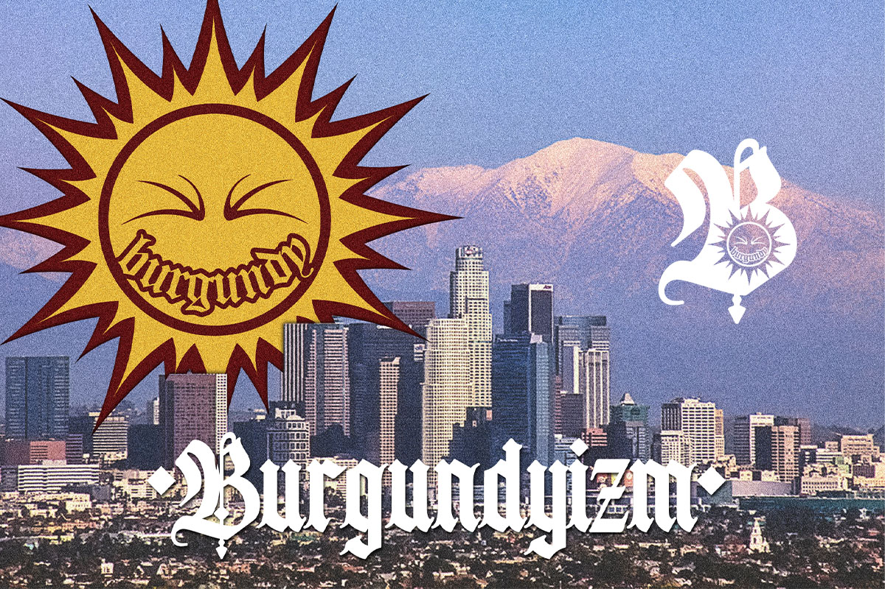
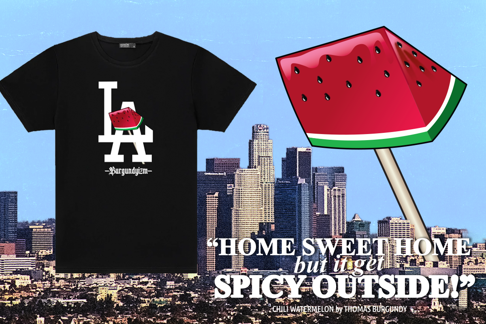
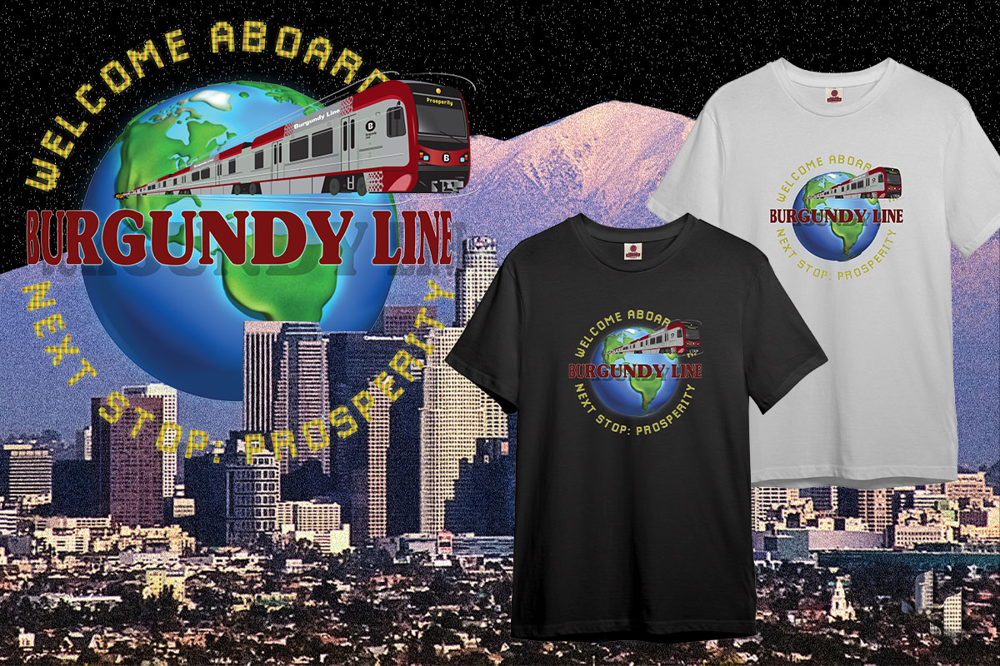
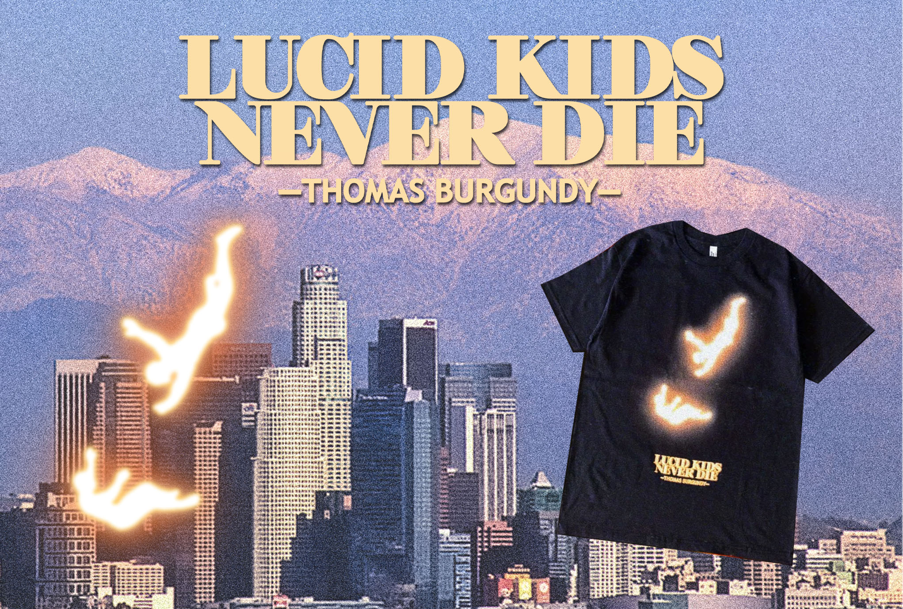
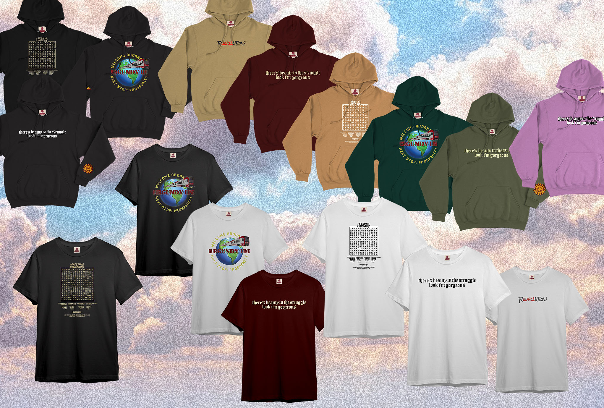

Burgundyizm

Burgundyizm holds a special place in my heart as well as Los Angeles as a whole.

The Burgundy Sun logo takes many forms. A personal favorite of mine that Ive helped realize is the sun inside a classic Old English B

A Staple to anyone with a taste for flare, the chilli watermelon candy is a must have for the folks over at Burgundyizm, Drawing this watermelon was a bit of a challenge to get it A1 but as always JJ.Graphics brought the flavor. This shirt was created to celebrate the first single off of the album Lucid Kids Never Die.
The Burgundy Line takes the mission statement of Burgundyizm and breaks it down to one word, PROSPERITY. This design was actually one of my first comission works that I was asked to do. Much inline with the ethos of Burgundyizm this design took me to a whole other planet.


